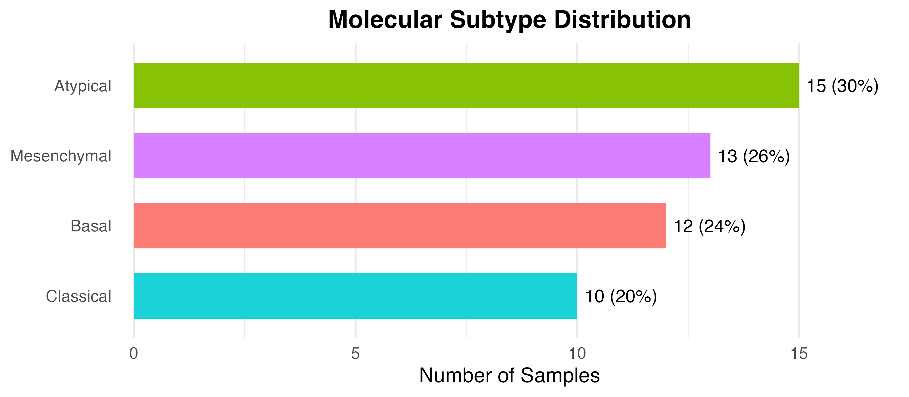
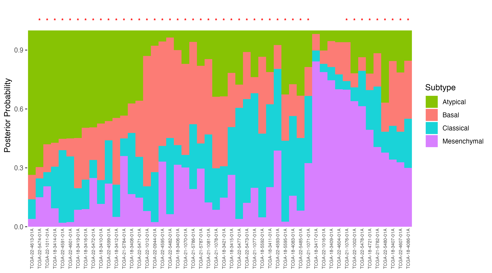
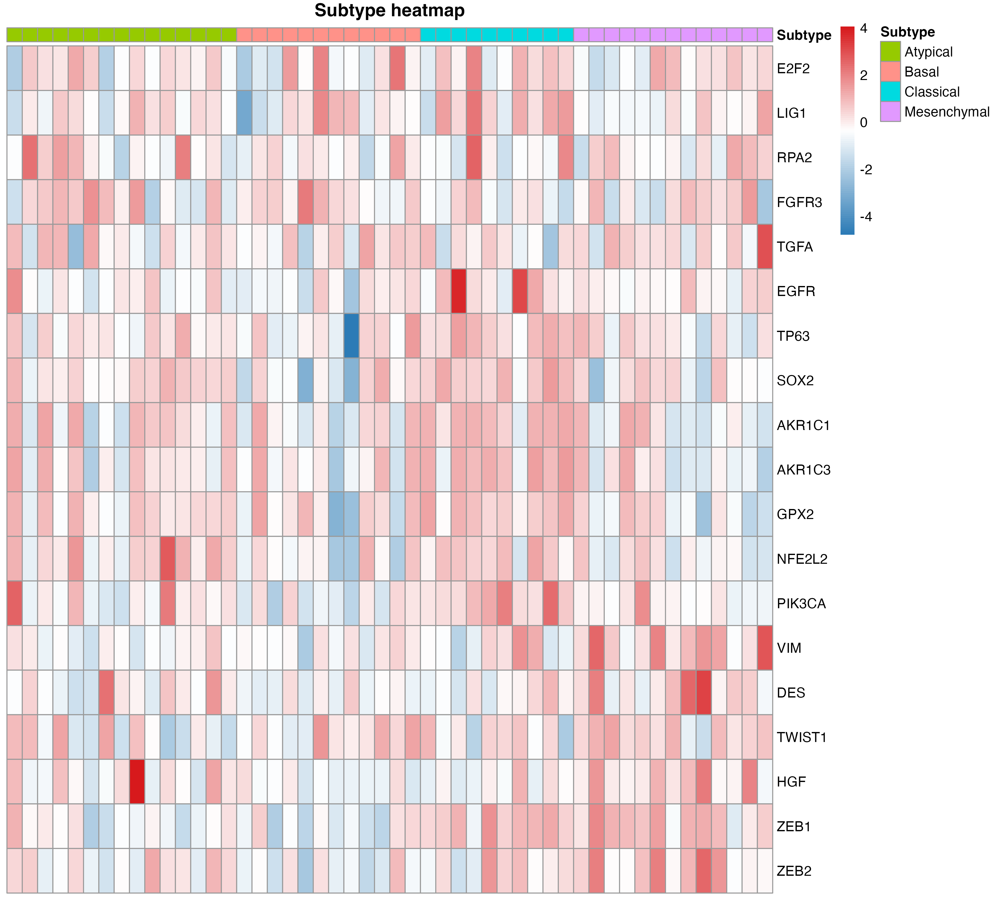

A pathway‑centric classification strategy for robust and platform‑independent molecular subtyping of head and neck squamous cell carcinoma
Jiang Li
Source:vignettes/HNSCclassifier_vignette.Rmd
HNSCclassifier_vignette.RmdIntroduction
Head and Neck Squamous Cell Carcinoma (HNSC) is a molecularly
heterogeneous disease, and its classification into distinct subtypes —
Atypical, Basal,
Classical, and Mesenchymal — has
important implications for prognosis and therapeutic strategy. The
HNSCclassifier package provides a ready-to-use tool for
assigning HNSC samples to these TCGA-established molecular subtypes. The
classifier employs a pathway-level normalization
strategy that first converts gene expression profiles into
pathway enrichment scores via single-sample Gene Set Enrichment Analysis
(ssGSEA), then applies a pre-trained random forest model for final
subtype prediction. This design minimises cross-platform technical
variation, making the classifier applicable to both RNA-seq and
microarray data.
Molecular Subtypes of HNSC
Head and Neck Squamous Cell Carcinoma is a heterogeneous disease with distinct molecular subtypes that differ in their biology, clinical outcomes, and therapeutic responses. The four subtypes, originally characterised by The Cancer Genome Atlas (TCGA) and Walter et al., are:
| Subtype | Key Characteristics |
|---|---|
| Atypical | Enriched for HPV-positive tumours; improved prognosis; p16INK4A overexpression; CDKN2A silencing less common |
| Basal | Expression patterns resembling basal epithelial cells; enrichments in epidermal development and extracellular matrix organisation genes |
| Classical | Heavy smoking association; the most prevalent subtype; characterised by xenobiotic metabolism, KEAP1/NRF2 pathway alterations, and oxidative stress gene signatures |
| Mesenchymal | Epithelial–mesenchymal transition (EMT) features; invasive/migratory phenotype; TGF-β signalling activation; poorest prognosis among the four subtypes |
Subtype information can guide prognosis stratification and may inform treatment selection in the context of clinical trials and translational research.
Features
-
Command-line interface:
classifyHNSC()for batch prediction from a numeric gene expression matrix — ideal for processing large cohorts or integrating into downstream pipelines. -
Interactive Shiny app:
classifyHNSC_interface()for users who prefer a graphical, point-and-click experience. -
Multi-platform identifier support: accepts gene
symbols, Ensembl IDs, Entrez IDs, or RefSeq accession numbers. Automatic
conversion is performed via
org.Hs.eg.db. -
Flexible output: return predicted subtype
class labels (
"class") or a probability matrix ("prob") showing posterior probabilities for each of the four subtypes. - Cross-platform robustness: designed to work with RNA-seq (TPM, FPKM, or normalised counts) and microarray expression data after log2 transformation.
- Automatic preprocessing: input validation, log2 transformation detection and application, and gene-level noise reduction (zero-variance gene filtering) are handled internally.
-
Curated pathway gene sets: built with a carefully
selected collection of pathway gene sets (
required.sets) for ssGSEA, bridging any input dataset to the model’s training feature space. -
Pre-trained random forest model: ships with a fully
trained
randomForestobject (finalModel) — no need for users to train or tune any model. -
Classification summary:
summarize_subtype()quickly tabulates the subtype distribution (counts, percentages, proportions) from classification results. -
Gene ID conversion:
convert_id()maps expression row names between any combination of SYMBOL, ENSEMBL, ENTREZID, and REFSEQ, with configurable aggregation for many-to-one mappings. -
Subtype-specific differential expression:
extract_top_genes()runs one-vs-rest differential tests to reveal marker genes for each molecular subtype. -
Confusion-matrix visualisation:
plot_confusion_matrix()summarises classifier performance against reference labels. -
HTML report generation:
report_classification()compiles results and figures into a single self-contained HTML report.
Installation
Before installing HNSCclassifier, ensure that the
required Bioconductor dependencies are available:
if (!requireNamespace("BiocManager", quietly = TRUE))
install.packages("BiocManager")
BiocManager::install(c("GSVA", "org.Hs.eg.db", "AnnotationDbi",
"randomForest", "shiny", "DT",
"shinythemes", "shinyjs"))These packages provide the ssGSEA algorithm (GSVA) and
the gene annotation database (org.Hs.eg.db) used for
identifier conversion. If you plan to use the interactive Shiny
interface, additionally install shiny, DT,
shinythemes, and shinyjs.
Once the dependencies are in place, install
HNSCclassifier from GitHub:
if (!requireNamespace("devtools", quietly = TRUE))
install.packages("devtools")
devtools::install_github("JLI-CBB/HNSCclassifier")Quick start
The classification workflow is straightforward: load the package,
prepare a numeric gene expression matrix with genes as rows and samples
as columns, and call classifyHNSC(). The function
internally performs input validation, optional log2 transformation, gene
identifier conversion (if needed), ssGSEA-based pathway scoring, and
random forest prediction — all in a single step. The
outputType argument controls whether the function returns
predicted subtype class labels or a probability
matrix showing the posterior probability for each of the four
subtypes.
A built-in example dataset, TCGA_LUSC, is provided for
demonstration. It contains 50 TCGA lung squamous cell carcinoma samples
with 22,962 genes in log2(TPM + 1) scale. While the dataset originates
from a lung cancer project, it serves as a convenient test case to
verify that the classifier runs correctly with your setup.
library(HNSCclassifier)
# Example: a toy expression matrix (genes as rows, samples as columns)
# Here we load a small built-in dataset for demonstration
data("TCGA_LUSC")
# Predict subtypes
subtypes <- classifyHNSC(TCGA_LUSC, outputType = "class")
#> [1] "Calculating ranks..."
#> [1] "Calculating absolute values from ranks..."
#> [1] "Normalizing..."
table(subtypes)
#> subtypes
#> Atypical Basal Classical Mesenchymal
#> 15 12 10 13
# Get probabilities
probs <- classifyHNSC(TCGA_LUSC, outputType = "prob")
#> [1] "Calculating ranks..."
#> [1] "Calculating absolute values from ranks..."
#> [1] "Normalizing..."
head(probs)
#> Atypical Basal Classical Mesenchymal
#> TCGA-18-3406-01A 0.100 0.484 0.100 0.316
#> TCGA-18-3407-01A 0.156 0.330 0.172 0.342
#> TCGA-18-3408-01A 0.372 0.150 0.312 0.166
#> TCGA-18-3409-01A 0.054 0.132 0.068 0.746
#> TCGA-18-3410-01A 0.474 0.288 0.122 0.116
#> TCGA-18-3411-01A 0.212 0.164 0.422 0.202Summarising classification results
Once samples have been assigned a subtype, the
summarize_subtype() function provides a quick overview of
the subtype distribution. It accepts the named character vector returned
by classifyHNSC(..., outputType = "class") and returns a
summary table with the number of samples, percentage, and proportion in
each of the four subtypes. All four TCGA subtypes are always reported —
even those with zero samples — so the output is consistent across
cohorts. By default, a horizontal bar chart of the distribution is also
drawn.
# Summary table plus bar chart
summarize_subtype(subtypes)
#>
#> ===== HNSC Molecular Subtype Classification Summary =====
#> Total samples: 50
#>
#> Subtype N Pct Proportion
#> Atypical 15 30 0.30
#> Mesenchymal 13 26 0.26
#> Basal 12 24 0.24
#> Classical 10 20 0.20
#>
#> Predominant subtype: Atypical
#> =========================================================
# To return the table without drawing the plot, set plot = FALSE
# tbl <- summarize_subtype(subtypes, plot = FALSE)Handling different gene ID types
Gene expression data from different bioinformatics pipelines often
use different gene identifier systems. The classifyHNSC()
function supports four common identifier types via the
idType parameter:
-
"SYMBOL"(default) — official HGNC gene symbols, e.g. TP53 -
"ENSEMBL"— Ensembl gene IDs, e.g. ENSG00000141510 -
"ENTREZID"— NCBI Entrez Gene IDs, e.g. 7157 -
"REFSEQ"— RefSeq accession numbers, e.g. NM_000546
When idType is not "SYMBOL", the function
automatically maps the input identifiers to official gene symbols using
the org.Hs.eg.db annotation package. A common scenario
where multiple input IDs map to the same symbol is handled by retaining
the maximum expression value across the duplicates,
thereby preserving the most biologically informative signal. After
conversion, the rest of the pipeline (log2 check, ssGSEA, random forest
prediction) proceeds identically to symbol-based input. The built-in
dataset TCGA_LUSC_ENSEMBL provides a ready-to-use example
with Ensembl identifiers.
# For Ensembl IDs
res <- classifyHNSC(TCGA_LUSC_ENSEMBL, idType = "ENSEMBL")
#> [1] "Calculating ranks..."
#> [1] "Calculating absolute values from ranks..."
#> [1] "Normalizing..."
table(res)
#> res
#> Atypical Basal Classical Mesenchymal
#> 15 12 10 13Converting gene identifiers between systems
The convert_id() function is a general-purpose utility
for converting the row names of an expression matrix between any two
supported identifier systems (SYMBOL, ENSEMBL, ENTREZID, REFSEQ). It is
useful when aligning expression data from different sources before a
joint analysis. Key options include:
-
agg_fun— how to combine values when several source IDs map to the same target ID:"max"(default),"mean", or"median". -
drop_unmapped— whether to remove genes that cannot be mapped (TRUE, default) or keep them with their original row name (FALSE). - Ensembl version suffixes (e.g.
ENSG00000141510.11) are stripped automatically before lookup.
# ENSEMBL -> SYMBOL (the example matrix already uses Ensembl IDs)
expr_sym <- convert_id(TCGA_LUSC_ENSEMBL, from = "ENSEMBL", to = "SYMBOL")
#>
#> ===== Gene ID conversion summary =====
#> Input: 22962 genes (ENSEMBL)
#> Mapped: 22962 genes (SYMBOL) [100%]
#> Unmapped: 0 genes
#> Duplicates:0 source IDs with multi-mapping
#> Aggregated by:max
#> =====================================
head(rownames(expr_sym))
#> [1] "A1BG" "A1BG-AS1" "A1CF" "A2M" "A2M-AS1" "A2ML1"
# SYMBOL -> ENTREZID, aggregating duplicates by the mean
expr_entrez <- convert_id(TCGA_LUSC, from = "SYMBOL", to = "ENTREZID",
agg_fun = "mean")
#>
#> ===== Gene ID conversion summary =====
#> Input: 22962 genes (SYMBOL)
#> Mapped: 22954 genes (ENTREZID) [100%]
#> Unmapped: 8 genes
#> Duplicates:0 source IDs with multi-mapping
#> Aggregated by:mean
#> =====================================
head(rownames(expr_entrez))
#> [1] "1" "10" "100" "1000" "10000" "100009668"Extracting pathway-level enrichment scores
For advanced users who wish to perform their own downstream analyses
(e.g. pathway-level differential expression, clustering, or custom
machine learning), the pathway_scores() function exposes
the internal ssGSEA enrichment scores that the random forest classifier
uses as features. It runs the same preprocessing pipeline as
classifyHNSC() — input validation, gene ID conversion, log2
transformation, and ssGSEA scoring — but returns the pathway × sample
enrichment matrix instead of predicted subtypes.
pw <- pathway_scores(TCGA_LUSC)
#> [1] "Calculating ranks..."
#> [1] "Calculating absolute values from ranks..."
#> [1] "Normalizing..."
dim(pw)
#> [1] 166 50
head(pw[, 1:5])
#> TCGA-18-3406-01A TCGA-18-3407-01A TCGA-18-3408-01A
#> ABBUD_LIF_SIGNALING_1_UP 0.47405127 0.4605015 0.39706053
#> ABBUD_LIF_SIGNALING_2_DN 0.07345488 0.1026220 0.05555408
#> ABBUD_LIF_SIGNALING_2_UP 0.38608716 0.4206424 0.36141114
#> ABE_INNER_EAR 0.34302136 0.3365637 0.28650809
#> ABE_VEGFA_TARGETS_30MIN 0.29946157 0.2752391 0.18959407
#> AGARWAL_AKT_PATHWAY_TARGETS 0.50262275 0.5432559 0.46506646
#> TCGA-18-3409-01A TCGA-18-3410-01A
#> ABBUD_LIF_SIGNALING_1_UP 0.4249509 0.392070195
#> ABBUD_LIF_SIGNALING_2_DN 0.1083097 0.002083698
#> ABBUD_LIF_SIGNALING_2_UP 0.5097801 0.278793472
#> ABE_INNER_EAR 0.3671162 0.318952640
#> ABE_VEGFA_TARGETS_30MIN 0.2794580 0.189644034
#> AGARWAL_AKT_PATHWAY_TARGETS 0.5027299 0.435983374The returned matrix can be used with standard bioinformatics tools
such as limma for differential pathway analysis,
ConsensusClusterPlus for unsupervised clustering, or
pheatmap for visualisation.
Visualising posterior subtype probabilities
The plot_subtype_probabilities() function creates a
stacked bar chart showing the posterior probability of each subtype for
every sample. Samples are grouped by predicted subtype and ordered by
confidence within each group. Samples whose maximum probability falls
below a user-defined threshold (default 0.5) are flagged with a red
asterisk, helping identify borderline cases that may warrant closer
inspection.
probs <- classifyHNSC(TCGA_LUSC, outputType = "prob")
#> [1] "Calculating ranks..."
#> [1] "Calculating absolute values from ranks..."
#> [1] "Normalizing..."
plot_subtype_probabilities(probs)To adjust the low-confidence threshold:
plot_subtype_probabilities(probs, threshold = 0.7)
Visualising subtype-specific gene expression
The plot_subtype_heatmap() function generates a heatmap
of curated subtype-driver genes, with samples annotated by their
predicted molecular subtype. It uses the built-in
subtype_genes set, and the expression values are row-wise
z-score scaled for comparability.
subtypes <- classifyHNSC(TCGA_LUSC, outputType = "class")
#> [1] "Calculating ranks..."
#> [1] "Calculating absolute values from ranks..."
#> [1] "Normalizing..."
plot_subtype_heatmap(TCGA_LUSC, subtypes)
A custom gene set can be supplied via the gene_set
argument, and clustering behaviour can be controlled with
cluster_rows and cluster_cols.
Identifying subtype-specific differentially expressed genes
To find genes that characterise a given molecular subtype,
extract_top_genes() performs a one-vs-rest
differential expression analysis: for each subtype, every gene is
compared between the samples of that subtype and all remaining samples.
The default test is the Wilcoxon rank-sum test, which makes no
distributional assumptions; a Welch t-test can be selected
instead with method = "t.test". P-values are corrected
across all genes with the Benjamini-Hochberg procedure.
Genes are retained only if they pass a minimum absolute log2
fold-change (log2fc_cutoff, default 1) and
an adjusted p-value threshold (p_cutoff, default 0.05). The
function returns a named list of data frames — one per subtype — sorted
by decreasing absolute fold change, with columns gene,
log2FC, mean_expr, mean_other,
p_value, and adj_p_value.
# One-vs-rest differential analysis for each subtype
degs <- extract_top_genes(TCGA_LUSC, subtypes)
names(degs)
#> [1] "Atypical" "Basal" "Classical" "Mesenchymal"
# Top differentially expressed genes of the Mesenchymal subtype
head(degs$Mesenchymal, 5)
#> gene log2FC mean_expr mean_other p_value adj_p_value
#> 1 NPTX2 2.069672 3.739648 1.669976 4.984518e-04 0.041319319
#> 2 SFRP2 2.010218 9.429868 7.419650 2.106822e-06 0.003455489
#> 3 LRRC15 1.851826 4.772459 2.920633 1.991851e-04 0.022754665
#> 4 MFAP4 1.793631 7.131809 5.338177 2.119005e-05 0.007723269
#> 5 COL10A1 1.758176 5.854151 4.095975 4.521187e-05 0.011664663Evaluating agreement with reference labels
When reference subtype labels are available (for example, the
official TCGA consensus annotations of a dataset),
plot_confusion_matrix() visualises how well the classifier
predictions agree with the reference. It takes a
caret::confusionMatrix object and draws an annotated
heatmap of predicted versus reference labels.
library(caret)
cm <- confusionMatrix(
factor(lusc_pred[lusc.subtype$sample]), # classifier predictions
factor(lusc.subtype$Expression.Subtype) # TCGA reference labels
)
plot_confusion_matrix(cm, title = "HNSCclassifier vs TCGA subtypes")Working with full TCGA-LUSC data
The built-in TCGA_LUSC dataset is a convenience subset
of 50 samples for quick testing. For real analyses, you can download the
full TCGA-LUSC expression cohort and reproduce the complete
classification workflow. This section walks through each step — from
downloading raw data to comparing predictions against the original TCGA
consensus annotations.
Downloading expression data
The TCGA-LUSC gene expression matrix (STAR-aligned, log2(TPM+1)
transformed) is hosted on the UCSC Xena data browser.
Download the file TCGA-LUSC.star_tpm.tsv.gz:
Downloading TCGA subtype annotations
The TCGA molecular subtype calls are available via TCGAbiolinks. Install it if needed:
BiocManager::install("TCGAbiolinks")Full pipeline: from raw data to predicted subtypes
The following code reads the expression TSV, strips Ensembl version
suffixes, converts Ensembl IDs to gene symbols, retains primary tumour
samples only, filters zero-variance genes, and runs
classifyHNSC(). It also fetches the TCGA reference
annotation for downstream comparison.
library(data.table)
library(org.Hs.eg.db)
library(dplyr)
library(tibble)
library(stringr)
library(TCGAbiolinks)
library(HNSCclassifier)
# ---- 1. Read expression data ----
lusc.expr <- data.table::fread(
"TCGA-LUSC.star_tpm.tsv",
data.table = FALSE
)
# Strip Ensembl version suffix (e.g. ENSG00000141510.11 → ENSG00000141510)
lusc.expr$Ensembl_ID <- sapply(
lusc.expr$Ensembl_ID,
function(x) unlist(strsplit(x, "\\."))[1]
)
# Convert Ensembl ID → gene symbol
lusc.expr$symbol <- AnnotationDbi::mapIds(
org.Hs.eg.db,
keys = lusc.expr$Ensembl_ID,
keytype = "ENSEMBL",
column = "SYMBOL"
)
lusc.expr$Ensembl_ID <- NULL
lusc.expr <- lusc.expr %>%
dplyr::filter(!is.na(symbol)) %>%
dplyr::group_by(symbol) %>%
dplyr::summarise_all(max) %>%
dplyr::ungroup() %>%
as.data.frame() %>%
tibble::column_to_rownames("symbol")
# Keep primary tumour samples only (barcodes ending with "-01A")
lusc.expr <- lusc.expr[, grepl("01A$", colnames(lusc.expr))]
# ---- 2. TCGA subtype annotation ----
lusc.subtype <- TCGAbiolinks::TCGAquery_subtype(tumor = "LUSC")
lusc.subtype$sample <- paste0(lusc.subtype$patient, "-01A")
lusc.subtype <- lusc.subtype[
lusc.subtype$sample %in% colnames(lusc.expr),
]
lusc.expr <- lusc.expr[, lusc.subtype$sample]
# Harmonise subtype labels to title case
lusc.subtype$Expression.Subtype <- stringr::str_to_title(
lusc.subtype$Expression.Subtype
)
# Remove zero-variance genes
lusc.expr <- lusc.expr[apply(lusc.expr, 1, mad) > 0, ]
# ---- 3. Run HNSCclassifier ----
lusc_pred <- classifyHNSC(lusc.expr, outputType = "class")
table(lusc_pred)Comparing with TCGA consensus annotations
The TCGA project assigned HNSC subtypes by integrating mRNA, miRNA,
methylation, and copy-number data via consensus clustering. The
HNSCclassifier uses only transcriptomic data, so perfect
agreement is not expected; nevertheless, a cross-tabulation gives a
useful sense of concordance:
comp <- data.frame(
TCGA = lusc.subtype$Expression.Subtype,
HNSCclass = lusc_pred[lusc.subtype$sample]
)
table(comp)Launching the Shiny interface
For users who prefer a graphical, point-and-click experience over writing R code, the package includes an interactive Shiny web application. The app provides a user-friendly interface for uploading expression data, configuring classification parameters, and exploring results — all within a web browser.
The app interface is organised into three tabs:
- Predict — Upload a CSV or tab-delimited gene expression matrix (max 50 MB), select the gene identifier type and desired output format, and run the classifier. Results are displayed in an interactive table with copy, CSV, and Excel export options. A downloadable example file is provided to help users prepare their data in the correct format.
- Tutorial — Step-by-step instructions on preparing an expression matrix, uploading data, and interpreting classification results.
- Contact — Author information and a direct link to the GitHub Issues page for support.
The app performs the same underlying classification pipeline as the command-line function, so results are identical regardless of the interface chosen.
Ensure that shiny, DT, shinythemes, and shinyjs are installed before launching:
Generating an HTML report
The report_classification() function compiles the
classification results — including the subtype summary, distribution bar
chart, posterior-probability plot, marker-gene heatmap, per-sample
table, and any differential-expression results — into a single
self-contained HTML report. Sections are included only when the
corresponding input is provided, so the function works equally well for
a minimal run (class labels alone) or a full report.
# Full report: expression matrix + class labels + probabilities
report_classification(
expr = TCGA_LUSC,
subtype = subtypes,
probs = probs,
output_file = "HNSC_report.html"
)The generated HTML is self-contained (figures are embedded) and can be shared with collaborators or included as supplementary material for a publication.
Session info
sessionInfo()
#> R version 4.3.1 (2023-06-16)
#> Platform: aarch64-apple-darwin20 (64-bit)
#> Running under: macOS 26.6.2
#>
#> Matrix products: default
#> BLAS: /Library/Frameworks/R.framework/Versions/4.3-arm64/Resources/lib/libRblas.0.dylib
#> LAPACK: /Library/Frameworks/R.framework/Versions/4.3-arm64/Resources/lib/libRlapack.dylib; LAPACK version 3.11.0
#>
#> locale:
#> [1] en_US.UTF-8/en_US.UTF-8/en_US.UTF-8/C/en_US.UTF-8/en_US.UTF-8
#>
#> time zone: Asia/Shanghai
#> tzcode source: internal
#>
#> attached base packages:
#> [1] stats graphics grDevices utils datasets methods base
#>
#> other attached packages:
#> [1] HNSCclassifier_0.1.0
#>
#> loaded via a namespace (and not attached):
#> [1] DBI_1.3.0 bitops_1.0-9
#> [3] GSEABase_1.64.0 rlang_1.2.0
#> [5] magrittr_2.0.5 otel_0.2.0
#> [7] matrixStats_1.5.0 compiler_4.3.1
#> [9] RSQLite_3.53.2 DelayedMatrixStats_1.24.0
#> [11] png_0.1-8 systemfonts_1.2.3
#> [13] vctrs_0.7.3 pkgconfig_2.0.3
#> [15] crayon_1.5.3 fastmap_1.2.0
#> [17] XVector_0.42.0 labeling_0.4.3
#> [19] rmarkdown_2.31 graph_1.80.0
#> [21] ragg_1.4.0 bit_4.6.0
#> [23] xfun_0.58 randomForest_4.7-1.2
#> [25] zlibbioc_1.48.2 cachem_1.1.0
#> [27] beachmat_2.18.1 GenomeInfoDb_1.38.8
#> [29] jsonlite_2.0.0 blob_1.3.0
#> [31] rhdf5filters_1.14.1 DelayedArray_0.28.0
#> [33] Rhdf5lib_1.24.2 BiocParallel_1.36.0
#> [35] irlba_2.3.5.1 parallel_4.3.1
#> [37] R6_2.6.1 bslib_0.11.0
#> [39] RColorBrewer_1.1-3 GenomicRanges_1.54.1
#> [41] jquerylib_0.1.4 Rcpp_1.1.0
#> [43] SummarizedExperiment_1.32.0 knitr_1.51
#> [45] GSVA_1.50.5 IRanges_2.36.0
#> [47] Matrix_1.5-4.1 tidyselect_1.2.1
#> [49] rstudioapi_0.19.0 abind_1.4-8
#> [51] yaml_2.3.12 codetools_0.2-19
#> [53] lattice_0.21-8 tibble_3.3.1
#> [55] Biobase_2.62.0 withr_3.0.2
#> [57] KEGGREST_1.42.0 S7_0.2.2
#> [59] evaluate_1.0.5 desc_1.4.3
#> [61] Biostrings_2.70.3 pillar_1.11.1
#> [63] MatrixGenerics_1.14.0 stats4_4.3.1
#> [65] generics_0.1.4 RCurl_1.98-1.19
#> [67] S4Vectors_0.40.2 ggplot2_4.0.3
#> [69] sparseMatrixStats_1.14.0 scales_1.4.0
#> [71] xtable_1.8-4 glue_1.8.1
#> [73] pheatmap_1.0.13 tools_4.3.1
#> [75] ScaledMatrix_1.10.0 annotate_1.80.0
#> [77] fs_2.1.0 XML_3.99-0.18
#> [79] rhdf5_2.46.1 grid_4.3.1
#> [81] AnnotationDbi_1.64.1 SingleCellExperiment_1.24.0
#> [83] GenomeInfoDbData_1.2.11 BiocSingular_1.18.0
#> [85] HDF5Array_1.30.1 cli_3.6.6
#> [87] rsvd_1.0.5 textshaping_1.0.1
#> [89] S4Arrays_1.2.1 dplyr_1.2.1
#> [91] gtable_0.3.6 sass_0.4.10
#> [93] digest_0.6.39 BiocGenerics_0.48.1
#> [95] SparseArray_1.2.4 org.Hs.eg.db_3.18.0
#> [97] htmlwidgets_1.6.4 farver_2.1.2
#> [99] memoise_2.0.1 htmltools_0.5.9
#> [101] pkgdown_2.1.3 lifecycle_1.0.5
#> [103] httr_1.4.8 bit64_4.8.2